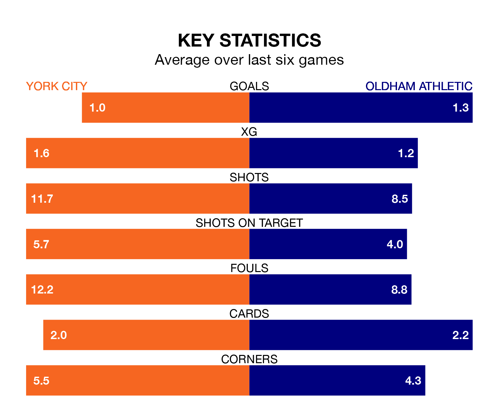

York City host Oldham Athletic on Tuesday at the LNER Community Stadium in the National League.
In their last league match, on Saturday, York drew with Dagenham and Redbridge 1-1 at home, with their goal scored by Ryan Jack Glenn Fallowfield.
Oldham won, 3-1 away at Maidenhead United, with Karl Mike Fondop-Talum (two) and Joe Garner on the scoresheet.
With 42 goals in 33 games so far this season, York are scoring at below the league average rate with 1.3 goals per game. And they are conceding at an average rate, letting in 50 goals at a rate of 1.5 per game.
Oldham, meanwhile, are above average scorers, with 1.6 goals per game, compared to a league average of 1.5. They have conceded 1.3 goals per game.
City are 19th in the table after 33 games, of which they have won eight and drawn 14, earning 38 points.
Athletic are 13 places ahead of the hosts in sixth, with 14 wins and 10 draws putting them on 52 points.
York are in mixed form in the National League, with two wins and two draws from their last six games.
With four wins and a draw over that period, the Latics' form is better – they have taken 13 points from 18, compared to York's eight.
In the last three years, York and Oldham have played each other on three occasions. Oldham won two of them and they drew once.
Their last meeting was on September 19, when Oldham won 2-0 at home.
Updated: 12:18 (UTC), 19/02/24